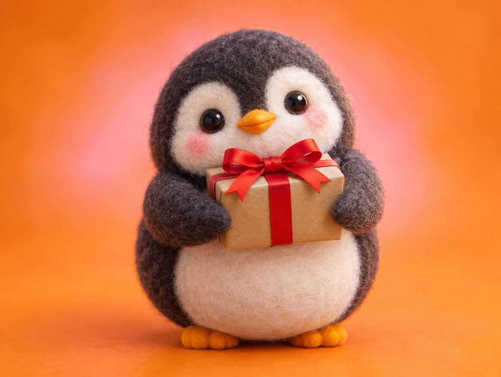

📝 DRAFT · 下書き — まだ本番に出していません · 下書き一覧
🐧 EVERYDAY LIFE⚡ 20 SEC
Luck is carried to you by people, so keep a smile 🎁

Luck Carriers
The kanji for "luck" is the same as in "carry."
Maybe luck is something that people carry to you.
Smile Wins
Small chances come to people who always smile.
Straight Face
It seems a face with no expression makes people feel uneasy.
⚡ TRY IT
🎁 You, 3 years later
In 3 small moments, choose a smile or a straight face.
🎒 Seeds: 0
1/3 🍣 You sit at a sushi counter. The chef looks at you.
2/3 🔑 The person in front of you drops a key.
3/3 🆕 A new gym opens near your home. The staff says, "Hello!"
⏩ Now, let's jump to 3 years later…
🍣 The chef introduced you to a fun new friend.🍣 Nothing happened.
🔑 "Thank you!" Now you are friendly neighbors.🔑 Nothing happened.
🆕 You go every week. Healthy and strong!🆕 Nothing happened.
🍀 Luck MAX! People carried luck to you.
🍀 Some luck came. Maybe smile a little more?
🌫️ Nothing bad… but nothing good came either.
Tiny Seeds
Good luck does not come with a big bang; it is a small seed you notice later: "That was the start."
📚 I learned this from the Japanese blog "Panda no Ondo".